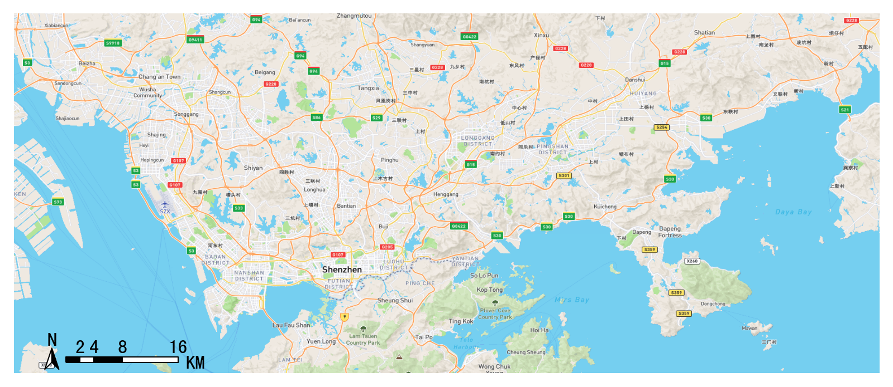
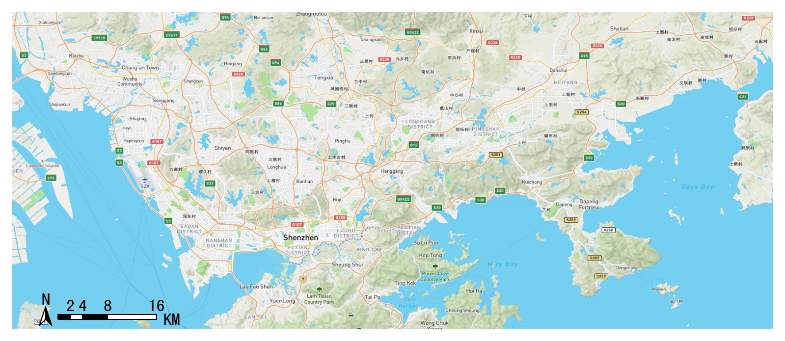
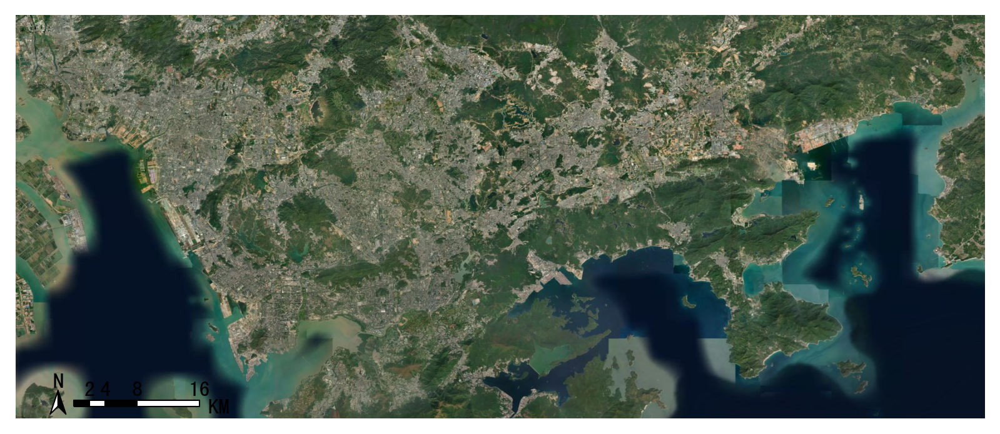
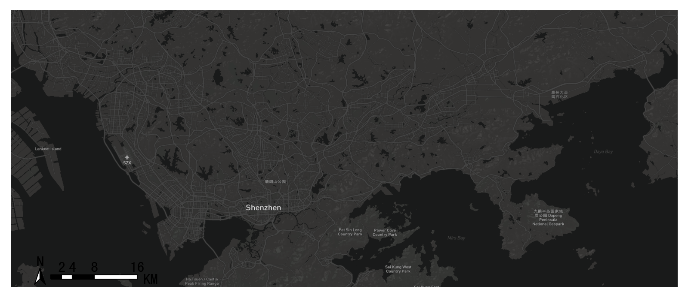
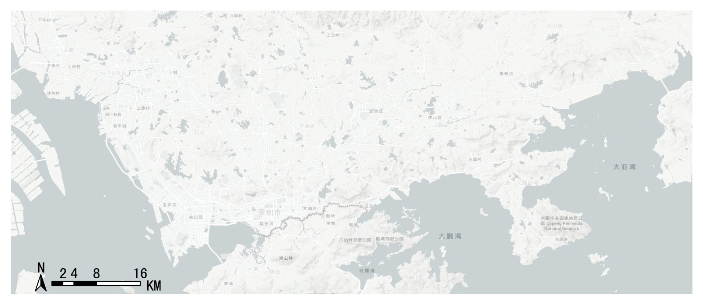
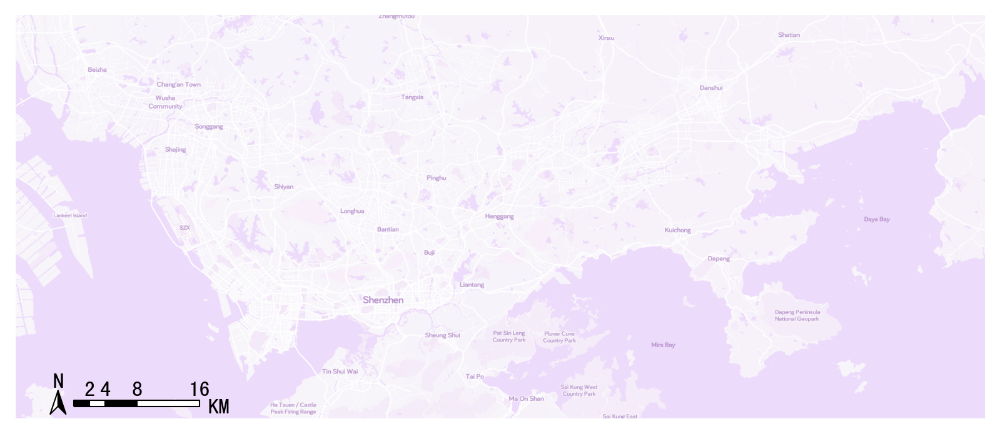
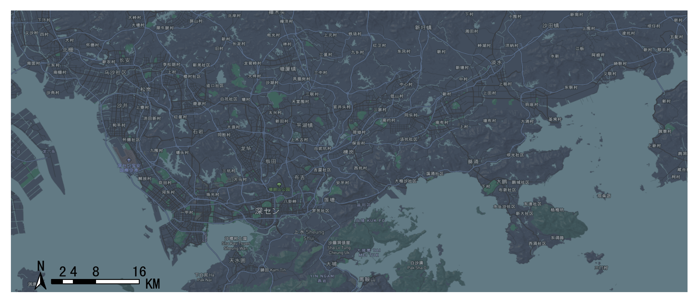
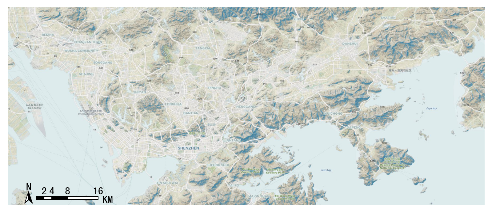
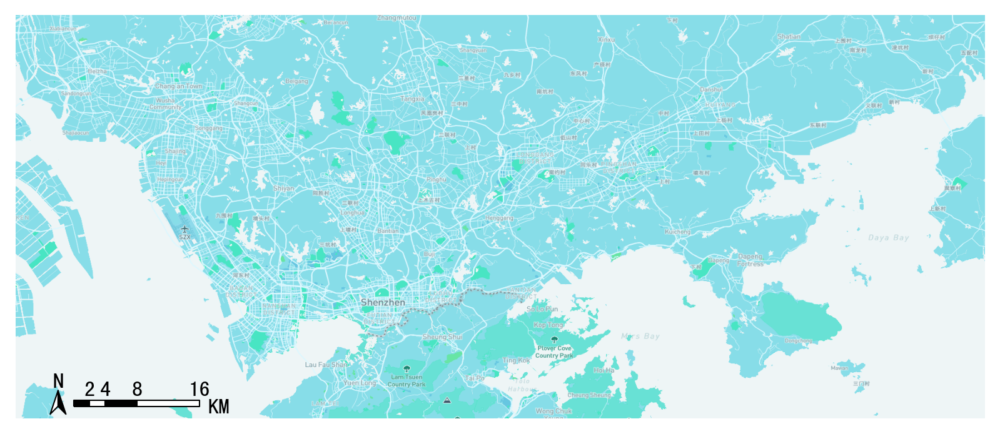

底图加载¶
使用前的设置¶
TransBigData包提供了在matplotlib上绘制地图底图的功能，底图由mapbox提供，坐标系为WGS84。如果你要使用该功能，首先需要点击这个链接注册一个mapbox的账号，mapbox上注册成为开发者，并获取到一个mapbox token。 这个链接介绍了mapbox token的作用。
如果你已经得到了mapbox token，可以用以下代码为TransBigData设置mapbox token(只需要设置一次，后面重新打开python也不需要再重新设置了)：
import transbigdata as tbd
#用下面代码设置你的mapboxtoken
tbd.set_mapboxtoken('pk.eyxxxxxxxxxx.xxxxxxxxx')#必须在里面设置你申请的token，直接复制此行代码无效！
另外还需要设置一个地图底图的存储位置，下一次显示同一个位置时，地图会从本地读取加载。
#设置你的地图底图存储路径
#如果你是linux或者mac系统，路径是这么写，注意最后有一个反斜杠
tbd.set_imgsavepath(r'/Users/xxxx/xxxx/')
#如果是windows系统，路径这么写，最后注意要两个斜杠以防转义
tbd.set_imgsavepath(r'E:\pythonscript\xxx\\')
设置好后，下次绘制底图时，会在你设置的路径下创建一个tileimg文件夹，底图都放在里面 尝试一下下面的代码，看看能否成功绘制底图
#定义显示范围范围
bounds = [113.6,22.4,114.8,22.9]
#创建图框
import matplotlib.pyplot as plt
fig =plt.figure(1,(8,8),dpi=250)
ax =plt.subplot(111)
plt.sca(ax)
#添加地图底图
tbd.plot_map(plt,bounds,zoom = 11,style = 4)
#添加比例尺和指北针
tbd.plotscale(ax,bounds = bounds,textsize = 10,compasssize = 1,accuracy = 2000,rect = [0.06,0.03],zorder = 10)
plt.axis('off')
plt.xlim(bounds[0],bounds[2])
plt.ylim(bounds[1],bounds[3])
plt.show()
地图底图加载¶
TransBigData包的底图绘制功能由plot_map包提供。首先确保你的plot_map包在0.3.3版本以上:
pip install -U plot-map
-
transbigdata.plot_map(plt, bounds, zoom='auto', style=4, printlog=False, styleid='dark')¶
添加地图底图
输入
- boundsList
底图的绘图边界，[lon1,lat1,lon2,lat2] (WGS84坐标系) 其中，lon1,lat1是左下角坐标，lon2,lat2是右上角坐标
- zoomnumber
底图的放大等级，默认为auto自动选取。越大越精细，加载的时间也就越久，一般单个城市大小的范围，这个参数选取12到16之间
- printlogbool
是否显示日志
- stylenumber
地图底图的样式，可选1-10，对应分别如下（需要plot_map包在0.3.3版本以上）
底图样式1：streets¶
底图样式2：outdoors¶
底图样式3：satellite¶
底图样式4：light¶

底图样式5：dark¶
底图样式6：light-ch（中文）¶
底图样式7：ice creem¶
底图样式8：night¶
底图样式9：terrain¶
底图样式10：basic blue¶
用法¶
#设定显示范围
bounds = [lon1,lat1,lon2,lat2]
tbd.plot_map(plt,bounds,zoom = 12,style = 4)
指北针和比例尺¶
-
transbigdata.plotscale(ax, bounds, textcolor='k', textsize=8, compasssize=1, accuracy='auto', rect=[0.1, 0.1], unit='KM', style=1, **kwargs)¶
为底图添加指北针和比例尺
输入
- boundsList
底图的绘图边界，[lon1,lat1,lon2,lat2] (WGS84坐标系) 其中，lon1,lat1是左下角坐标，lon2,lat2是右上角坐标
- textsizenumber
标注文字大小
- compasssizenumber
标注的指北针大小
- accuracynumber
标注比例尺的长度（米）
- unitstr
‘KM’,’km’,’M’,’m’ 比例尺的单位
- stylenumber
1或2，比例尺样式
- rectList
比例尺在图中的大致位置，如[0.9,0.9]则在右上角
tbd.plotscale(ax,bounds = bounds,textsize = 10,compasssize = 1,accuracy = 2000,rect = [0.06,0.03])